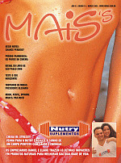

A 19ª Bienal Internacional de Livros de São Paulo recebeu no Pavilhão de Exposições do Anhembi mais de 800 mil pessoas - mais de 6 vezes o número de habitantes da nossa cidade, em 11 dias do evento! E cerca de 77% dos visitantes compraram livros!
A 19ª Bienal Internacional de Livros de São Paulo recebeu no Pavilhão de Exposições do Anhembi mais de 800 mil pessoas - mais de 6 vezes o número de habitantes da nossa cidade, em 11 dias do evento! E cerca de 77% dos visitantes compraram livros!
Primeiro, os números: 310 horas de programação cultural, 1,5 milhão de livros, 3.000 lançamentos, 700 sessões de autógrafos e 86% dos visitantes avaliaram positivamente o evento.
Agora, os verbos! Autores consagrados deram seus depoimentos sobre a Bienal no site do TERRA - e todos muito positivos, por sinal. Mas a razão é clara. São nas Bienais Internacionais que os apaixonados pelos livros, profissionais e empresas da área e os autores podem se encontrar sem barreiras.
Só na Bienal de SP, foram 119 autores, sendo 20 estrangeiros, em sessões chamadas "Salão de Idéias", promovendo o contato de escritores e leitores, bem como suas idéias a respeito de diversos assuntos.
A riqueza intelectual de um encontro como esse não pode ser medida em números, pois são as idéias que fazem nações, conceitos, enfim, o mundo - e que também podem promover a mudança do mesmo.
Entretanto, foram levantados dois dados tristes sobre a literatura no Brasil. Primeiro: existe um número extremamente baixo de livrarias pelo país. E isso pode ser comprovado aqui mesmo em Patos de Minas.
Segundo: o valor da literatura no país. Editoras de grande sucesso foram as que trabalham com "pocket books" (livros de bolso), disponibilizando obras de Bukowski, Neruda, Wilde, Dostoievski, Agathe Christie e outros monstros da literatura a preços MUITO baixos! Simples: livros de qualidade inestimável à valores acessíveis, porque CULTURA É PARA TODOS! Abraços.